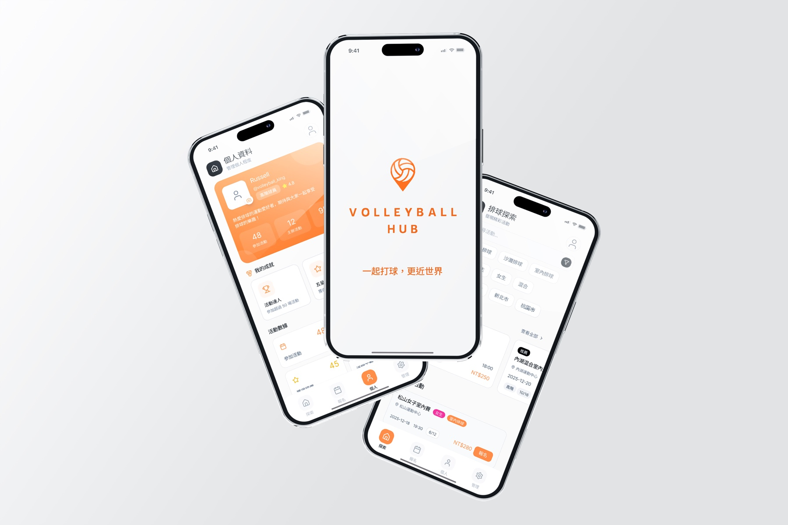
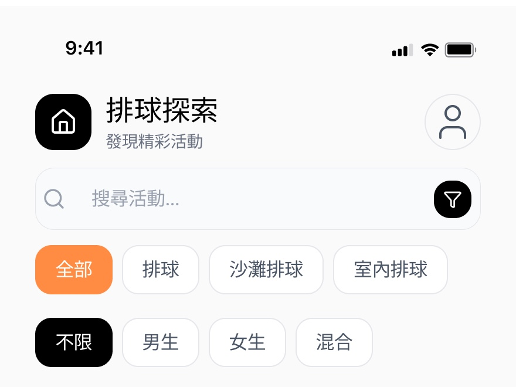
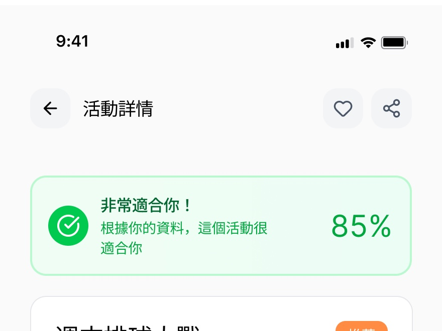
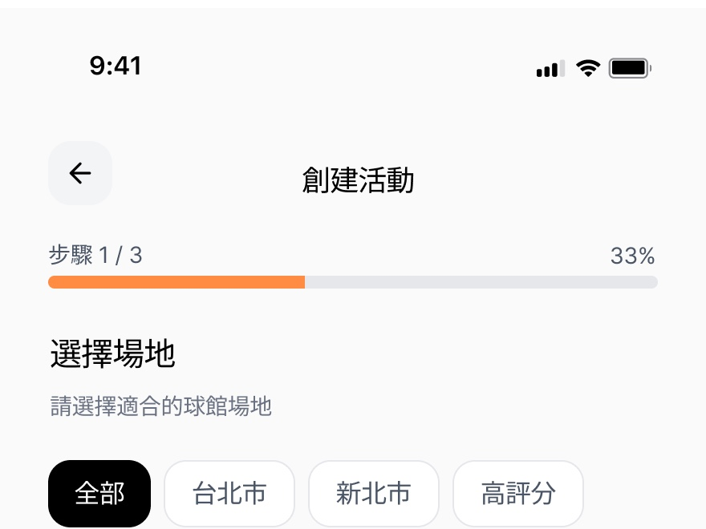
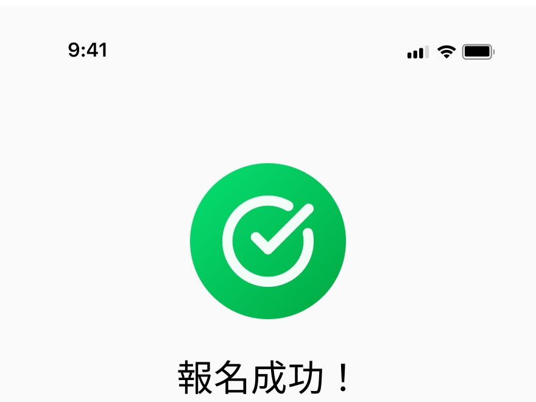
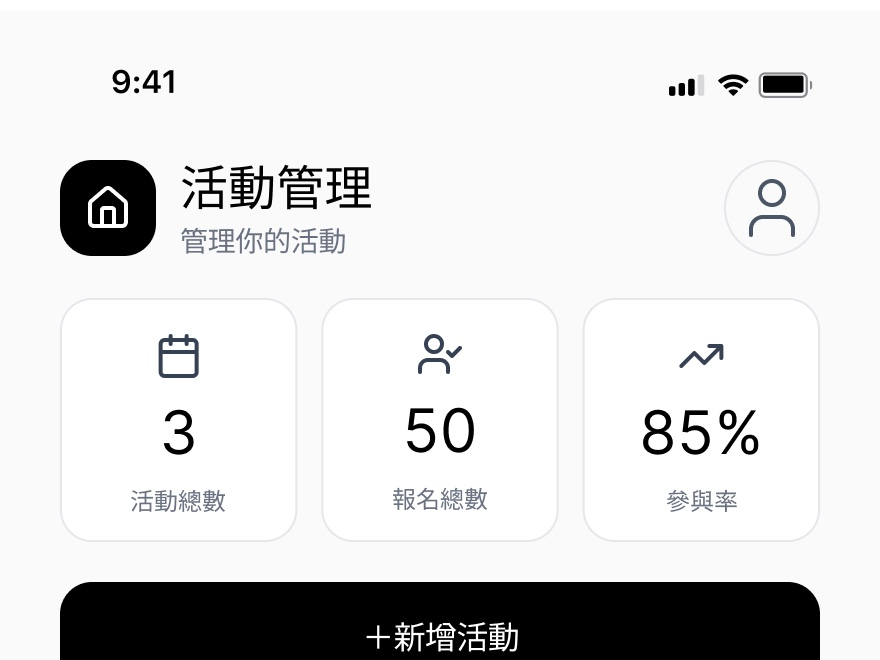
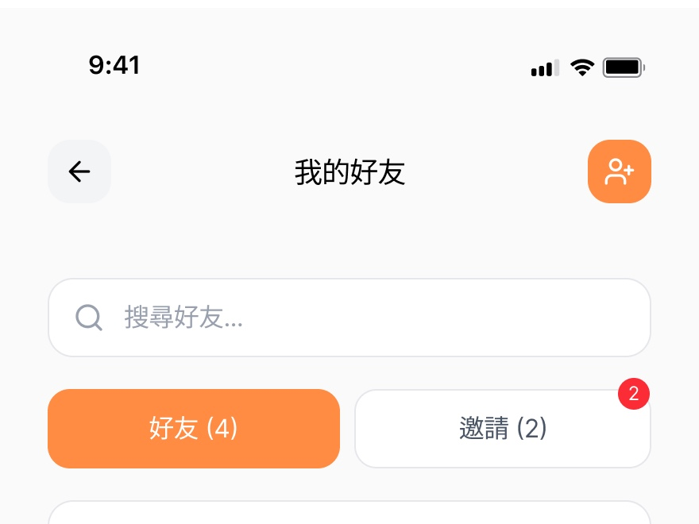

排球活動媒合平台，協助球友依照地點、時間與技能等級快速找到適合的活動，並簡化報名、繳費與活動管理流程。
讓找場地、報名、管理報名，都在同一個體驗裡完成。

許多球友想約球，卻常常卡在「不知道哪裡有場次」「不確定程度合不合適」「報名流程太麻煩」這幾個問題上。Volleyball Hub 希望把找活動、報名、管理報名這三件事，整合進一個好用的行動端體驗中，降低揪團與參加的門檻。
場次資訊散落在不同社群與訊息群組，難以比較時間、地點與程度。
報名狀態、繳費與名額常需要私訊確認，缺乏即時可見的狀態。
主揪需要手動整理名單與收款紀錄，容易出錯也耗時。
從探索活動、查看詳情到報名成功、管理報名與好友，建立一致且清楚的操作流程。






透過將「找活動—報名—管理」拆解為清楚的步驟與狀態回饋，讓球友能在幾個步驟內完成報名，也讓主揪不再需要靠人工對帳。這個專案也讓我更熟悉如何在資訊量大的活動列表中，透過標籤與篩選降低使用者的決策成本。